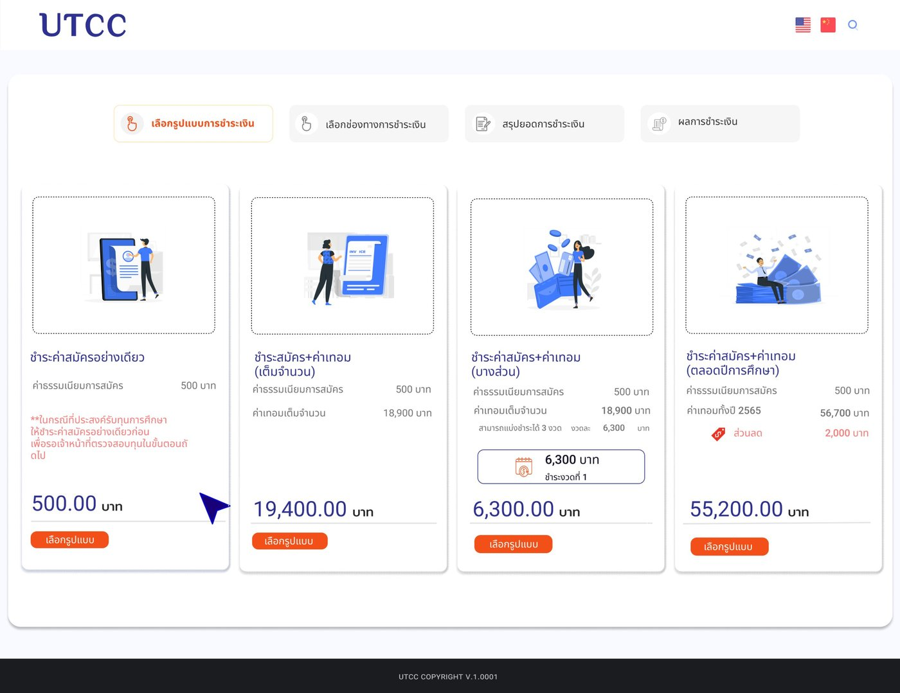

Case Study · EdTech · 2022
งาน UX/UIทำงานแบบ Agile✓ ใช้งานจริงแล้วU-NEXT · ระบบมหาวิทยาลัย
Product ระบบมหาวิทยาลัยของ U-NEXT ในเครือ  G-ABLE Group เริ่มจากระบบรับสมัครและ Back Office ของมหาวิทยาลัยหอการค้าไทย (UTCC) ซึ่งเป็นโปรเจกต์แรกของฉันที่ G-ABLE แล้วขยายไปขายให้มหาวิทยาลัยเกษตรศาสตร์ (KU) และ NIDA พร้อมระบบตัดเกรดและ Student Portal ฉันเป็น UX/UI Designer คนเดียวในทีมทุกช่วง
G-ABLE Group เริ่มจากระบบรับสมัครและ Back Office ของมหาวิทยาลัยหอการค้าไทย (UTCC) ซึ่งเป็นโปรเจกต์แรกของฉันที่ G-ABLE แล้วขยายไปขายให้มหาวิทยาลัยเกษตรศาสตร์ (KU) และ NIDA พร้อมระบบตัดเกรดและ Student Portal ฉันเป็น UX/UI Designer คนเดียวในทีมทุกช่วง

บทบาท
UX/UI Designer
(คนเดียวในทีม)
บริษัท
U-NEXT · G-ABLE Group
ลูกค้า
UTCC · KU · NIDA
ทีมที่ทำงานร่วม
PM · BA · SA · Dev
สรุปใน 30 วินาที
มหาวิทยาลัยต้องการระบบสมัครเรียน ชำระเงิน และดูแลนักศึกษา ที่ใช้งานง่ายทั้งฝั่งผู้สมัครและเจ้าหน้าที่
Designer คนเดียวในทีม ออกแบบระบบรับสมัครและ Back Office ให้ UTCC แล้วต่อยอดเป็น product ที่ปรับให้ KU และ NIDA
Product เดียวใช้กับ 3 มหาวิทยาลัย ขยายจากระบบรับสมัครไปสู่ระบบตัดเกรดของอาจารย์และ Student Portal
01 · ระบบนี้ทำอะไร
ทักษะ UXสมัครเรียนและชำระเงินได้จบในที่เดียว
ระบบมี 2 ฝั่ง ฝั่งผู้สมัครใช้กรอกใบสมัครและชำระเงินออนไลน์ ส่วนฝั่งเจ้าหน้าที่ใช้ Back Office ตรวจใบสมัครและการชำระเงิน การชำระเงินแบ่งเป็น 4 ขั้นตอนที่เห็นได้จากแถบด้านบนของหน้าจอ
ลองกดเลือกรูปแบบการชำระเงิน
{{sel.name}}
{{sel.note}}
อีกฝั่งของระบบ · Back Office สำหรับเจ้าหน้าที่
เมื่อผู้สมัครส่งใบสมัครเข้ามา เจ้าหน้าที่รับสมัครใช้ Back Office ตรวจและจัดการต่อ ฉันออกแบบทั้งสองฝั่งให้ข้อมูลและสถานะตรงกัน
รายการผู้สมัคร
ค้นหาและกรองผู้สมัครตามคณะ สาขา รอบสมัคร และสถานะ
ตรวจใบสมัคร
ดูข้อมูลและเอกสารที่อัปโหลด อนุมัติหรือขอเอกสารเพิ่ม
ตรวจการชำระเงิน
ดูรูปแบบที่ผู้สมัครเลือก ยอดที่จ่าย และสถานะของแต่ละงวด
ตรวจสอบทุน
รับเรื่องผู้ขอทุนที่จ่ายเฉพาะค่าสมัคร แล้วอัปเดตผลกลับไปให้ผู้สมัคร
จาก 1 มหาวิทยาลัย สู่ product
ทักษะ POทักษะ UXระบบเดียว ขายให้ 3 มหาวิทยาลัย
ระบบที่ออกแบบให้ UTCC กลายเป็นฐานของ product ที่ U-NEXT นำไปเสนอให้มหาวิทยาลัยอื่น แต่ละรอบไม่ได้ออกแบบใหม่ทั้งหมด แต่ต่อยอด pattern เดิมและเพิ่มเฉพาะส่วนที่ลูกค้าต้องการ
1 · UTCC
ระบบรับสมัคร + Back Office
สมัครเรียน ชำระเงิน 4 รูปแบบ และหน้าจอเจ้าหน้าที่ตรวจใบสมัครและการชำระเงิน · วาง pattern และ component ชุดแรก
2 · KU
+ ระบบตัดเกรด + Student Portal
ใช้ระบบรับสมัครเดิม แล้วเพิ่มระบบให้อาจารย์กรอกคะแนนและตัดเกรด และ portal ให้นักศึกษาดูผลการเรียน
3 · NIDA
ปรับให้ระดับบัณฑิตศึกษา
ใช้ product ชุดเดียวกับ KU แล้วปรับตามเงื่อนไขของสถาบันที่ผู้เรียนส่วนใหญ่เป็นคนทำงาน
มุมมอง Product
ออกแบบให้ “ใช้ซ้ำได้” ตั้งแต่ลูกค้ารายแรก ทำให้ U-NEXT ขายระบบเดิมให้ลูกค้าใหม่ได้เร็ว และดูแลระบบชุดเดียวแทนหลายเวอร์ชัน
Design system ของ product
ทักษะ UXทักษะ POทำเองDesign system เดียว เปลี่ยนธีมได้ตามมหาวิทยาลัย
เพื่อให้ U-NEXT นำ product ไปขายมหาวิทยาลัยใหม่ได้เร็ว ฉันวาง design system ที่แยก “หน้าตา” ออกจาก “โครงสร้าง” เปลี่ยนสี โลโก้ และฟอนต์ตามแบรนด์ของแต่ละสถาบันได้ โดยไม่ต้องออกแบบหน้าจอใหม่
1 · Foundation
สี ตัวอักษร ระยะห่าง มุมโค้ง เงา
2 · Semantic token
primary · accent · success · warning · surface
3 · Component
ปุ่ม ฟอร์ม ตาราง การ์ด แถบขั้นตอน ป้ายสถานะ
4 · Theme ต่อมหาวิทยาลัย
สลับชุด token เดียว ได้สี โลโก้ และฟอนต์ของสถาบันนั้น
Component เดียวกัน 3 ธีม · สีเป็นตัวอย่างประกอบ
ลูกค้าใหม่ = ธีมใหม่
เพิ่มมหาวิทยาลัยใหม่ด้วยการตั้งค่า theme ไม่ต้องเริ่มออกแบบจากศูนย์
ความหมายไม่เปลี่ยน
สีสถานะ เช่น ชำระแล้ว หรือมีข้อผิดพลาด คงที่ทุกธีม ผู้ใช้ไม่สับสน
ดูแลชุดเดียว
Dev ใช้ component ชุดเดียวทุกสถาบัน แก้ครั้งเดียวได้ทุกที่
02 · ทีมและวิธีทำงาน
ทักษะ PODesigner คนเดียว ในทีม Agile
คนเดียวในทีม
ดูแลงาน UX/UI ของระบบรับสมัครทั้งหมด จึงต้องตัดสินใจเรื่องการออกแบบเองและอธิบายเหตุผลให้ทีมเข้าใจ
ทำงานกับทุกบทบาท
ทำงานร่วมกับ PM, BA, SA และ Dev ตั้งแต่รับ requirement จนถึงส่งต่องานออกแบบให้พัฒนา
Agile
ทำงานเป็นรอบ sprint ส่งงานออกแบบทีละส่วน และปรับตาม feedback ของทีมและลูกค้า
จังหวะการทำงานในแต่ละ sprint (2 สัปดาห์)
Sprint planning → ออกแบบล่วงหน้า 1 sprint → daily stand-up → ส่งต่องานให้ Dev ผ่าน Figma → design QA → sprint review / demo กับลูกค้า
ทีม 7 คน
PM 1 · BA 1 · SA 1 · Dev 3 และ UX/UI Designer 1 คนคือฉัน
ส่งต่องานให้ Dev
ส่ง prototype ใน Figma พร้อม note ระบุ state ต่าง ๆ เช่น error, loading และกรณีชำระเงินไม่สำเร็จ ให้ Dev ไม่ต้องเดาเอง
ทำงานกับ BA และ SA
รีวิว flow กับ BA ให้ตรงเงื่อนไขค่าเทอมและทุน และเช็กกับ SA ว่า payment gateway รองรับการแบ่งจ่ายได้จริงก่อนออกแบบต่อ
03 · โจทย์และเป้าหมาย
ทักษะ POสมัครเสร็จแล้ว แต่ยังไม่รู้ว่าต้องจ่ายเท่าไร
ขั้นตอนเดิมแยกการสมัครกับการชำระเงินออกจากกัน ผู้สมัครต้องดูค่าใช้จ่ายจากประกาศ ไปชำระเงินเอง แล้วส่งหลักฐานกลับมา เมื่อมีทั้งแบบจ่ายเต็ม แบ่งจ่าย จ่ายทั้งปี และกรณีขอทุน ผู้สมัครและผู้ปกครองจึงสับสน และถามเจ้าหน้าที่ซ้ำ ๆ ในช่วงเปิดรับสมัคร
Problem statement
“ผู้สมัครและผู้ปกครองต้องการรู้ว่าแต่ละทางเลือกต้องจ่ายเท่าไร และจ่ายให้จบได้ในครั้งเดียว แต่ข้อมูลค่าใช้จ่ายกระจายอยู่หลายที่ จึงเลือกไม่ถูกและต้องโทรถาม”
นักเรียน ม.6
กรอกใบสมัครเองผ่านมือถือหรือคอมพิวเตอร์ อยากสมัครให้จบเร็ว
ผู้ปกครอง
เป็นคนตัดสินใจและจ่ายเงิน ต้องการเห็นยอดรวมและส่วนลดชัด ๆ ก่อนจ่าย
เจ้าหน้าที่รับสมัคร
ต้องการลดคำถามซ้ำ และตรวจสอบสถานะการชำระเงินได้ง่าย
เป้าหมาย
สมัครและชำระเงินได้จบออนไลน์ในระบบเดียว · ผู้สมัครเลือกรูปแบบการชำระเงินได้เองโดยไม่ต้องถาม · รองรับกรณีขอทุนการศึกษา
ระยะเวลา
ประมาณ 4 เดือน ทำงานเป็น sprint ละ 2 สัปดาห์ ให้ทันเปิดรับสมัครปีการศึกษา 2565
04 · มุมมอง PO / PM
ทักษะ POทักษะ PMมองทั้งวงจรของโปรดักต์ ไม่ใช่แค่หน้าจอ
ในโปรเจกต์นี้ฉันเป็น UX/UI Designer แต่ได้ทำงานใกล้ชิดกับ PM และเห็นงานครบทุกช่วง ตั้งแต่เก็บ requirement จนระบบเปิดใช้จริง ส่วนนี้จึงแยกให้ชัดว่าเรื่องไหนฉัน ทำเอง และเรื่องไหนฉัน มีส่วนร่วม
ใครเกี่ยวข้อง และต้องดูแลแต่ละคนอย่างไร
มีส่วนร่วมงานที่บริษัททำให้ลูกค้าภายนอกมีผู้มีส่วนได้เสีย 2 ฝั่ง การรู้ว่าใครตัดสินใจเรื่องอะไรช่วยให้ถามถูกคนตั้งแต่แรก
ฝั่งมหาวิทยาลัย (ลูกค้า)
ดูแลใกล้ชิด
ดูแลใกล้ชิด
แจ้งความคืบหน้า
ผู้ใช้งานจริง
ฝั่ง U-NEXT (ทีมพัฒนา)
ทำไปเพื่ออะไร และวัดผลอย่างไร
ทำเองผู้สมัครไม่หลุดกลางทาง
ทุกคนที่สมัครแล้วไม่จ่ายเงิน คือผู้สมัครที่มหาวิทยาลัยเสียไป หน้าชำระเงินจึงเป็นจุดที่สำคัญที่สุดของระบบ
ได้รับเงินเร็วขึ้น
ส่วนลด 2,000 บาทเมื่อจ่ายทั้งปี และการแบ่งจ่าย 3 งวด ช่วยให้ผู้ปกครองเลือกตามงบ แทนการเลื่อนจ่ายออกไป
ลดงานเจ้าหน้าที่
ถ้าผู้สมัครเข้าใจค่าใช้จ่ายเองได้ คำถามซ้ำและการตรวจหลักฐานการโอนด้วยมือก็ลดลง
ตัวชี้วัดที่เสนอให้ทีมติดตาม
ตั้ง funnel ไว้ดูว่าผู้สมัครหลุดที่ขั้นไหน เพื่อใช้ปรับปรุงรอบรับสมัครถัดไป (ตัวเลขด้านล่างเป็นภาพตัวอย่างของ funnel ไม่ใช่ผลจริง)
ติดตามเพิ่ม: อัตราชำระเงินไม่สำเร็จแยกตามช่องทาง · สัดส่วนผู้เลือกแต่ละรูปแบบ · จำนวนคำถามเรื่องค่าใช้จ่ายถึงเจ้าหน้าที่
วางแผนให้ทันวันเปิดรับสมัคร
มีส่วนร่วมไทม์ไลน์ 8 sprint (ประมาณ 4 เดือน)
จัดลำดับขอบเขต (MoSCoW)
Must ต้องมีวันเปิดรับ
Should ควรมี
Could ถ้ามีเวลา
Won’t ยังไม่ทำรอบนี้
ความเสี่ยงและวิธีรับมือ ทำเอง
Payment gateway
ไม่แน่ใจว่ารองรับการแบ่งจ่ายไหม จึงเช็กกับ SA ตั้งแต่ wireframe ก่อนลงรายละเอียด UI
ค่าเทอมเปลี่ยนทุกปี
เสนอให้ยอดเงิน ส่วนลด และจำนวนงวดดึงจากระบบหลังบ้าน ไม่ฝังไว้ในหน้าจอ ปีหน้าไม่ต้องแก้ code
กำหนดเปิดรับสมัคร
ส่งงานออกแบบล่วงหน้า 1 sprint และเรียงงานตาม MoSCoW ให้ส่วน Must เสร็จก่อนเสมอ
ระหว่างพัฒนา: ตัดสินใจและรับมือการเปลี่ยนแปลง
มีส่วนร่วมUser story ที่เขียนร่วมกับ BA
User story ตัวอย่างที่เขียนร่วมกับ BA
ในฐานะ ผู้ปกครอง ฉันต้องการ เห็นยอดที่ต้องจ่ายของแต่ละรูปแบบก่อนกดชำระ เพื่อ เลือกแบบที่เหมาะกับงบของครอบครัว
Given ผู้สมัครส่งใบสมัครครบแล้ว When เข้าหน้าเลือกรูปแบบ Then เห็นการ์ดครบ 4 แบบ แต่ละแบบแสดงรายการค่าใช้จ่าย ส่วนลด และยอดที่ต้องจ่ายวันนี้
Trade-off: กรณีขอทุนการศึกษา ทำเอง
ทางเลือก A
ตรวจสิทธิ์ทุนและคำนวณยอดใหม่ในขั้นตอนชำระเงิน
ผู้ใช้ได้ประสบการณ์ที่ครบที่สุด แต่ต้องเชื่อมข้อมูลทุนหลายระบบ เสี่ยงไม่ทันเปิดรับสมัคร
ทางเลือก B · ที่เลือก
จ่ายค่าสมัคร 500 บาทก่อน แล้วให้เจ้าหน้าที่ตรวจทุนใน Back Office
ใช้ flow เดิมที่มีอยู่ ส่งมอบทันกำหนด และยังบอกผู้สมัครชัดเจนด้วยหมายเหตุบนการ์ด ส่วนการตรวจอัตโนมัติเก็บไว้เฟสถัดไป
Change request กลางโปรเจกต์
ส่งมอบและเปิดใช้
มีส่วนร่วมก่อนเปิดรับสมัครจริง ทีมใช้ checklist ร่วมกับลูกค้าเพื่อตัดสินใจว่าพร้อมเปิดหรือไม่ (go / no-go)
Go-live checklist · ลองกดติ๊กได้
{{ckDone}} / {{ckTotal}}พร้อมเปิดรับสมัคร 🎉
หลังเปิดใช้: ฟัง วัด และวางเฟสถัดไป
มีส่วนร่วมHypercare 2 สัปดาห์แรก
ทีมเฝ้าระบบช่วงเปิดรับสมัคร ดูอัตราชำระเงินไม่สำเร็จ และปัญหาที่เจ้าหน้าที่แจ้งเข้ามาทุกวัน
Feedback → backlog
เจ้าหน้าที่แจ้งว่าผู้ขอทุนบางคนไม่เห็นหมายเหตุบนการ์ด ฉันจึงเสนอปรับให้เด่นขึ้น และเพิ่มคำถามยืนยันก่อนจ่าย เข้า backlog รอบถัดไป
Retrospective
ทีมตกลงกันว่าโปรเจกต์ถัดไป designer จะคุยกับ SA ตั้งแต่ sprint แรก เพื่อเจอข้อจำกัดของระบบเร็วขึ้น
Backlog เฟสถัดไป
ตรวจสอบทุนอัตโนมัติ · บันทึกใบสมัครไว้ทำต่อ · dashboard สถิติผู้สมัครใน Back Office · ภาษาอังกฤษและจีน
05 · กระบวนการ UX/UI
ทักษะ UXทักษะ POงานของ designer ไม่ได้มีแค่วาด UI
การออกแบบ UI จริง ๆ เป็นแค่ 1 ใน 6 ช่วงของงาน ที่เหลือคือการทำความเข้าใจโจทย์ ตัดสินใจร่วมกับทีม และดูแลจนระบบใช้งานได้จริง กดดูแต่ละช่วงได้
{{cur.num}} · {{cur.name}}
{{cur.goal}}
- {{a}}
ทำงานร่วมกับ
{{cur.with}}
สิ่งที่ส่งมอบ
ทักษะ PO ที่ใช้
User flow · การสมัครและชำระเงิน
จาก wireframe สู่ UI
Wireframe
UI จริง
ล็อกโครงให้ทุกการ์ดมีลำดับเดียวกัน ทั้งภาพ ชื่อ รายการค่าใช้จ่าย ยอดรวม และปุ่ม ตั้งแต่ขั้น wireframe ผู้ใช้จึงเทียบตัวเลือกได้ทันที
Note สำหรับ Dev ใน Figma
- 1Stepper มี 3 state: ทำแล้ว · กำลังทำ (ส้ม) · ยังไม่ถึง
- 2การ์ดที่ถูกเลือกต้องมีขอบเน้น และกดได้ทั้งการ์ด ไม่ใช่แค่ปุ่ม
- 3ยอดงวดคำนวณจากระบบ แสดง “งวดที่ 1” เสมอในหน้านี้
- 4ส่วนลดใช้สีแดงและเครื่องหมายลบ ยอดรวมต้องหักแล้ว
- 5ปุ่มมี state ปกติ · hover · loading · กดไม่ได้
- !ถ้าชำระไม่สำเร็จ แสดงเหตุผลและปุ่มลองใหม่ ไม่ต้องกรอกข้อมูลซ้ำ
06 · การออกแบบ
ทักษะ UXทำให้เรื่องเงินอ่านง่ายและตัดสินใจได้เร็ว
บอกว่าอยู่ขั้นไหน
แถบ 4 ขั้นตอนด้านบน ไฮไลต์ขั้นปัจจุบันด้วยสีส้ม ผู้สมัครรู้ว่าเหลืออีกกี่ขั้นก่อนจ่ายเสร็จ
เทียบตัวเลือกได้ในหน้าเดียว
ทั้ง 4 รูปแบบใช้การ์ดโครงเดียวกัน แจกแจงค่าใช้จ่ายทีละรายการ และแสดงยอดที่ต้องจ่ายเป็นตัวเลขใหญ่ที่จุดเดียวกัน
ทำให้การแบ่งจ่ายชัดเจน
แบบแบ่งงวดบอกจำนวนงวดและยอดต่องวด และแยกกล่อง “งวดที่ 1” ให้รู้ว่าวันนี้ต้องจ่ายเท่าไร
ชี้สิ่งที่ต้องระวัง
ส่วนลดเมื่อจ่ายทั้งปีและหมายเหตุสำหรับผู้ขอทุนใช้สีแดง ให้ผู้สมัครเห็นก่อนเลือกผิดรูปแบบ
ใบสมัคร
แบ่งฟอร์มยาวเป็นหลายส่วน ทั้งข้อมูลส่วนตัว ประวัติการศึกษา และเลือกคณะ/สาขา พร้อมบันทึกไว้ทำต่อภายหลังได้
อัปโหลดเอกสาร
บอกชัดว่าต้องใช้เอกสารอะไร รองรับไฟล์ชนิดไหน และแสดงตัวอย่างไฟล์ที่อัปโหลดแล้ว
สถานะการสมัคร
ผู้สมัครกลับมาดูได้ว่าใบสมัครและการชำระเงินอยู่ขั้นไหน โดยไม่ต้องโทรถามเจ้าหน้าที่
Back Office เจ้าหน้าที่
รายการผู้สมัครพร้อมตัวกรองและสถานะ หน้าตรวจใบสมัคร เอกสาร และการชำระเงิน สถานะที่เจ้าหน้าที่อัปเดตแสดงให้ผู้สมัครเห็นทันที
07 · ผลลัพธ์และบทเรียน
ทักษะ UXทักษะ POสิ่งที่ได้จากโปรเจกต์แรกที่ G-ABLE
ส่งมอบทันกำหนด
ระบบเปิดใช้ทันรอบรับสมัครปีการศึกษา 2565
จบในระบบเดียว
ผู้สมัครกรอกใบสมัคร เลือกรูปแบบ และชำระเงินได้ครบออนไลน์ ไม่ต้องส่งหลักฐานแยก
ใช้ต่อได้
รูปแบบการ์ดและ stepper กลายเป็นแนวทางให้หน้าอื่นของระบบใช้ต่อ
คุยกับ SA ให้เร็ว
การแบ่งจ่ายขึ้นกับว่า payment gateway รองรับอะไร การเช็กข้อจำกัดทางเทคนิคตั้งแต่ wireframe ช่วยให้ไม่ต้องออกแบบใหม่ทีหลัง
Designer คนเดียวต้องสื่อสารให้ชัด
ไม่มีใครช่วยรีวิวงานด้าน design ฉันจึงเขียนเหตุผลและ state ต่าง ๆ ไว้ใน Figma ให้ทั้งทีมเข้าใจตรงกัน